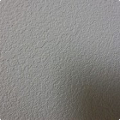
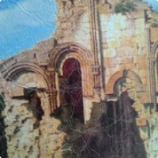
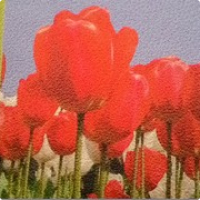
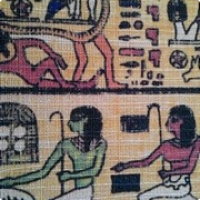

Материалы для печати (сольвент, экосольвент)
Фотообои для печати
- Обои виниловые на бумажной основе Stucco
-

Neschen Solvoprint wallpaper Stucco, водостойкие, огнеупорные, текстурированные "под штукатурку", бумажные, несамоклеящиеся, плотностью 350гр/м2.
В современном дизайне все больше и больше внимания уделяется цифровым технологиям, и далеко не на последнем месте стоит возможность использования цифровой печати, позволяющей наносить изображения на различные материалы. Исходя их современных требований предъявляемых к качеству исполняемой продукции, мы подбираем лучше образцы для воплощения задумок.
Нанесение на стены индивидуального изображения, возможно, многими способами, но, безусловно, самым выгодным будет – нанесение уже готовой продукции – обоев. Благодаря серии материалов Solvoprint Wallpaper появилась возможность получения индивидуального изображения путем прямой печати по поверхности материала, который затем легко наклеивается на стены (стены должны быть заранее подготовлены). Оформление помещений подобным образом удобно как для жилых, так и для офисных, ресторанных, клубных помещений.
Текстурированые (рыхлые, под штукатурку) фотообои (ПВХ покрытая бумага) Solvoprint Wallpaper Stucco предназначены для печати сольвентными, экосольвентными и Уф-отверждаемыми чернилами. Нетканая основа позволяет без труда снимать и переразмещать на поверхности стен готовое изображение. После полного высыхания запечатанное изображение, устойчиво к механическому воздействию (царапины).
Материал предназначен для изготовления обоев под индивидуальный заказ, полученное изображение может быть перенесено на стены с помощью клея для тяжелых обоев. Великолепно подходит для дизайнерскооформительских работ. Обои можно мыть водой. Материал пожаробезопасен (класс защиты В1) и может использоваться в помещениях с повышенными требованиями пожарной безопасности.
Наименование Размер Solvoprint wallpaper Stucco 1,30х50м. - Обои виниловые на флизилиновой основе
-

Текстурированые фотообои Canvas - фактура «живопись» предназначены для печати сольвентными, экосольвентными и Уф-отверждаемыми чернилами. Обои устойчивы к механическому воздействию (царапины). Материал предназначен для изготовления обоев под индивидуальный заказ, полученное изображение может быть перенесено на стены с помощью клея для тяжелых обоев. Великолепно подходит для дизайнерского оформления. Обои можно мыть водой.
- Характеристика:
- Бумага с ПВХ покрытием плотностью 330 гр/м2
- Бумага с покрытием для струйной печати и структурированной матовой поверхностью
- Сертификат пожаробезопасности В1
- Материал: ПВХ покрытая флизелиновая основа
- Цвет лицо/задник: Белый
- Плотность: 335 мкм
- Очень износостойкая бумага для создания настенного дизайна интерьеров
- Для внутреннего применения
- Возможно применение без ламинации
- Более долговечна при покрытии лаком
Наименование Размер SOLO Wallart Flitz Canvas 1,05х25м - Обои виниловые на бумажной основе classic
-

Фотообои Neschen Solvoprint Wallpaper classic, текстурированные бумажные несамоклеящиеся, 295 гр, текстура "под песок". В современном дизайне все больше и больше внимания уделяется цифровым технологиям, и далеко не на последнем месте стоит возможность использования цифровой печати, позволяющей наносить изображения на различные материалы. Исходя их современных требований предъявляемых к качеству исполняемой продукции, мы подбираем лучше образцы для воплощения задумок.
Нанесение на стены индивидуального изображения, возможно, многими способами, но, безусловно, самым выгодным будет – нанесение уже готовой продукции – обоев. Благодаря Solvoprint Wallpaper появилась возможность получения индивидуального изображения путем прямой печати по поверхности материала, который затем легко наклеивается на стены (стены должны быть заранее подготовлены). Оформление помещений подобным образом удобно как для частных так и для корпоративных клиентов.
Текстурированые фотообои (ПВХ покрытая бумага) Solvoprint Wallpaper предназначены для печати сольвентными, эко-сольвентными и Уф-отверждаемыми чернилами. Устойчивы к механическому воздействию (царапины).
Материал предназначен для изготовления обоев под индивидуальный заказ, полученное изображение может быть перенесено на стены с помощью клея для тяжелых обоев. Великолепно подходит для дизайнерского оформления. Обои можно мыть водой.
Материал пожаробезопасен (класс защиты В1) и может использоваться в помещениях с повышенными требованиями пожарной безопасности.
Наименование Размер Solvoprint wallpaper Classic 1,30х50м. - Обои виниловые на бумажной основе Linen
-

Neschen Solvoprint wallpaper Linen, водостойкие, огнеупорные, текстурированные "под лён", бумажные, несамоклеящиеся, плотность 360мкм. В современном дизайне все больше и больше внимания уделяется цифровым технологиям, и далеко не на последнем месте стоит возможность использования цифровой печати, позволяющей наносить изображения на различные материалы. Исходя их современных требований предъявляемых к качеству исполняемой продукции, мы подбираем лучше образцы для воплощения задумок.
Нанесение на стены индивидуального изображения, возможно, многими способами, но, безусловно, самым выгодным будет – нанесение уже готовой продукции – обоев. Благодаря серии материалов Solvoprint Wallpaper появилась возможность получения индивидуального изображения путем прямой печати по поверхности материала, который затем легко наклеивается на стены (стены должны быть заранее подготовлены). Оформление помещений подобным образом удобно как для жилых, так и для офисных, ресторанных, клубных помещений.
Текстурированые (под лён) фотообои (ПВХ покрытая бумага) Solvoprint Wallpaper Linen предназначены для печати сольвентными, экосольвентными и Уф-отверждаемыми чернилами. Нетканая основа позволяет без труда снимать и переразмещать на поверхности стен готовое изображение. После полного высыхания запечатанное изображение, устойчиво к механическому воздействию (царапины).
Материал предназначен для изготовления обоев под индивидуальный заказ, полученное изображение может быть перенесено на стены с помощью клея для тяжелых обоев. Великолепно подходит для дизайнерского оформления. Обои можно мыть водой.
Материал пожаробезопасен (класс защиты В1) и может использоваться в помещениях с повышенными требованиями пожарной безопасности.
Наименование Размер Solvoprint wallpaper Linen 1,30х50м.